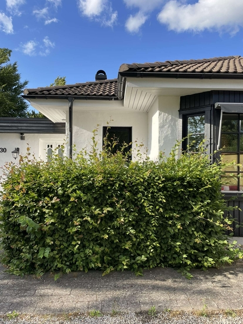
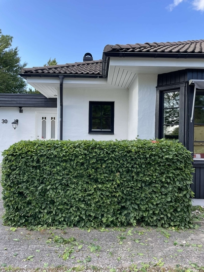

← Back to menu
Häckklippning
Häckklippning
Vårt häckklippningspaket ingår häckklippning och hopsamling av resterande avfall. Exempel: Häckar och buskar. Tjänsten tar ungefär 0,5-4 timmar beroende på storleken av häcken samt mängden avfall. Pris kan variera beroende på storleken av fastigheten. Vi erbjuder gratis beräknad kostnad!

